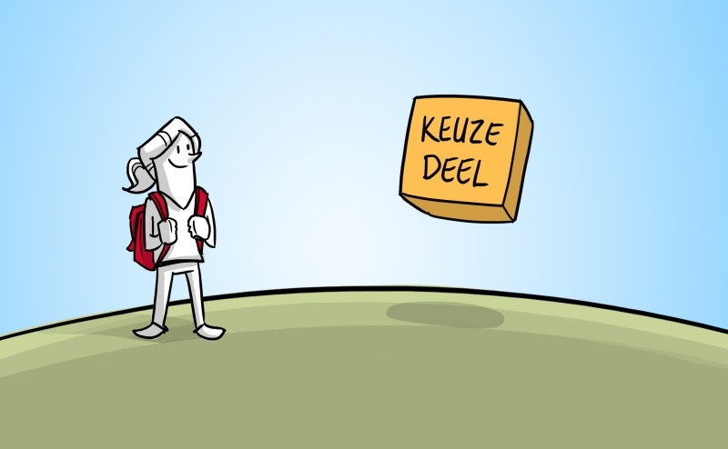
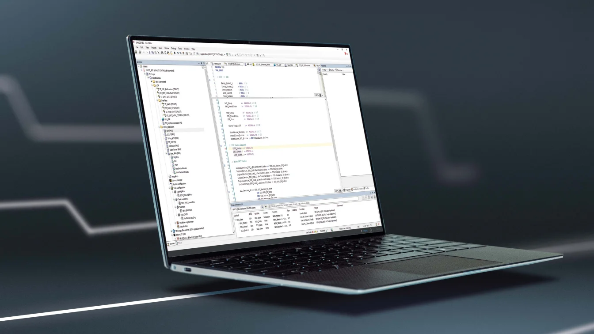

Welke keuzedelen worden aangeboden?
– Smart technology
– Voorbereiden op zelfstandig ondernemen
– Voorbereiden op het hbo:

Welke modules behandelen we?
De modules behandelen onderwerpen zoals DevSkills, Scrum, UI, user stories, web development, SQL, GIT, prototyping, objectgeoriënteerde programmering, BPV, ontwerp, verdieping, testen, en examens voor softwareontwerp en realisatie